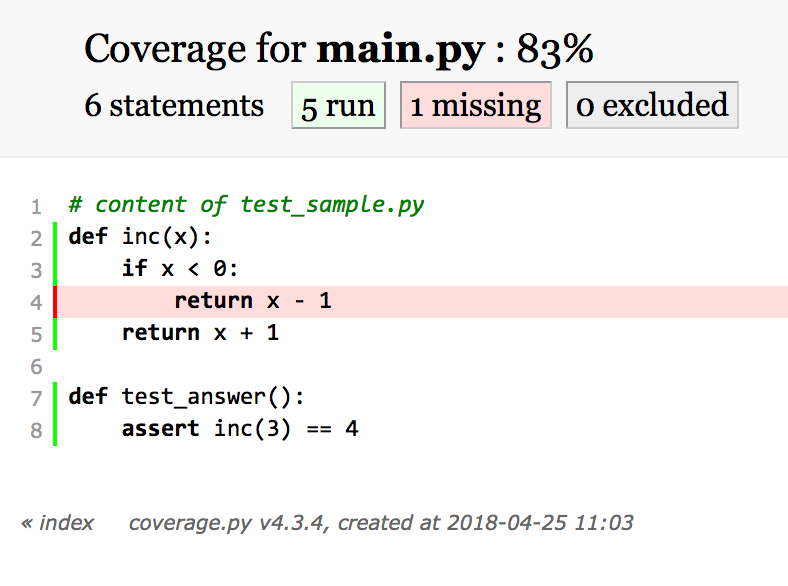

How do you know your code gives the right answers?
... what about after you make changes?
Legacy code: "code without tests" (Michael Feathers, Working Effectively with Legacy Code)
Testing your code
when to test: always.
where to test: external test suite.
Example: tests subdirectory inside package.
Perfect is the enemy of good; a basic level of tests is better than nothing. But a rigorous test suite will save you time and potential problems in the long run.
Why test?
Testing is a core principle of scientific software; it ensures results are trustworthy.
Scientific and engineering software is used for planes, power plants, satellites, and decisionmaking. Thus, correctness of this software is pretty important.
And we all know how easy it is to have mistakes in code without realizing it...
Testing is particularly important if you want contributions to your codebase.
- As a contributor, how do I know if my PR hasn’t broken anything?
- As a commiter, how do I know if your PR is ok?
- Unit tests are often a great repository of how different features of a library actually work
What and how to test?
def kepler_loc(p1, p2, dt, t):
'''Use Kepler's Laws to predict location of
celestial body'''
...
return p3
def test_kepler_loc():
p1 = jupiter(two_days_ago)
p2 = jupiter(yesterday)
exp = jupiter(today)
obs = kepler_loc(p1, p2, 1, 1)
if exp != obs:
raise ValueError(
"Jupiter is not where it should be!"
)
What is a test?
Tests compare expected outputs versus observed outputs for known inputs. They do not inspect the body of the function directly. In fact, the body of a function does not even have to exist for a valid test to be written.
def test_func():
exp = get_expected()
obs = func(*args, **kwargs)
assert exp == obs
Good idea: test through assertions
For exactness:
def test_kepler_loc():
p1 = jupiter(two_days_ago)
p2 = jupiter(yesterday)
exp = jupiter(today)
obs = kepler_loc(p1, p2, 1, 1)
assert exp == obs
For approximate exactness:
import numpy as np
def test_kepler_loc():
p1 = jupiter(two_days_ago)
p2 = jupiter(yesterday)
exp = jupiter(today)
obs = kepler_loc(p1, p2, 1, 1)
assert np.allclose(exp, obs)
Test using pytest
# content of test_sample.py
def inc(x):
return x + 1
def test_answer():
assert inc(3) == 5
$ pytest
pytest finds all testing modules and functions, and runs them.
Kinds of tests
interior test: precise points/values do not matter
edge test: test examines beginning or end of a range
Best practice: test all edges and at least one interior point.
Also corner cases: two or more edge cases combined.
import numpy as np
def sinc2d(x, y):
'''(Describe the function here)'''
if x == 0.0 and y == 0.0:
return 1.0
elif x == 0.0:
return np.sin(y) / y
elif y == 0.0:
return np.sin(x) / x
else:
return (np.sin(x) / x) * (np.sin(y) / y)
import numpy as np
from mod import sinc2d
def def test_internal():
exp = (2.0 / np.pi) * (-2.0 / (3.0 * np.pi))
obs = sinc2d(np.pi / 2.0, 3.0 * np.pi / 2.0)
assert np.allclose(exp, obs)
def test_edge_x():
exp = (-2.0 / (3.0 * np.pi))
obs = sinc2d(0.0, 3.0 * np.pi / 2.0)
assert np.allclose(exp, obs)
def test_edge_y():
exp = (2.0 / np.pi)
obs = sinc2d(np.pi / 2.0, 0.0)
assert np.allclose(exp, obs)
def test_corner():
exp = 1.0
obs = sinc2d(0.0, 0.0)
assert np.allclose(exp, obs)
Test generators
import numpy as np
import pytest
# contents of add.py
def add2(x, y):
return x + y
@pytest.mark.parametrize('exp, x, y', [
(4, 2, 2),
(5, -5, 10),
(42, 40, 2),
(16, 3, 13),
(-128, 0, -128),
])
def test_add2(self, x, y, exp):
obs = add2(x, y)
assert np.allclose(exp, obs)
Types of tests
- unit test: interrogate individual functions and methods
- integration test: verify that multiple pieces of the code work together
- regression test: confirm that results match prior code results (which are assumed correct)
Developers warn against having unit tests without any integration tests
 Sources: twitter/@ThePracticalDev,
twitter/@withzombies
Sources: twitter/@ThePracticalDev,
twitter/@withzombies
Test-Driven Development (TDD)
Write the tests first.
Before you write any lines of a function, first write the test for that function.
from numpy import allclose
from mod import std
def test_std1():
obs = std([0.0, 2.0])
exp = 1.0
assert np.allclose(exp, obs)
def std(vals):
# this must be cheating.
return 1.0
def test_std1():
obs = std([0.0, 2.0])
exp = 1.0
assert np.allclose(exp, obs)
def test_std2():
obs = std()
exp = 0.0
assert np.allclose(exp, obs)
def test_std3():
obs = std([0.0, 4.0])
exp = 2.0
assert np.allclose(exp, obs)
def std(vals):
# a bit better, but still not quite generic
if len(vals) == 0:
return 0.0
return vals[-1] / 2.0
def test_std1():
obs = std([0.0, 2.0])
exp = 1.0
assert np.allclose(exp, obs)
def test_std2():
obs = std()
exp = 0.0
assert np.allclose(exp, obs)
def test_std3():
obs = std([0.0, 4.0])
exp = 2.0
assert np.allclose(exp, obs)
def test_std4():
obs = std([1.0, 3.0])
exp = 1.0
assert np.allclose(exp, obs)
def test_std4():
obs = std([1.0, 1.0, 1.0])
exp = 0.0
assert np.allclose(exp, obs)
def std(vals):
# finally some math
n = len(vals)
if n == 0:
reutnr 0.0
mu = sum(vals) / n
var = 0.0
for val in vals:
var = var + (val - mu)**2
return (var / n)**0.5
Other testing tips
Consider PEP8 testing to ensure consistency in your codebase, regardless of the number of people contributing.
pip install flake8
flake8 .
Test raising exceptions
import pytest
def test_zero_division():
with pytest.raises(ZeroDivisionError):
1 / 0
Mocking in unit tests
-
Mocks allow you replace parts of your system with precisely controllable code
- Specify return values
- Throw exceptions
-
Assertions to Verify mock interactions
- Was the method called?
- Was it called with the expected arguments?
- A good unit test should only exercise the code in your module and mock out all dependencies
Example with mocking:
def test_create_update_path(self, mocker):
import elasticsearch
mock_es = mocker.MagicMock(elasticsearch.Elasticsearch)
mocker.patch.object(
elasticsearch, 'Elasticsearch', return_value=mock_es
)
adaptor = ElasticSearchAdapter('localhost', '9999', 'foo', 'bar')
adaptor.create_update_path("123-456", {
'name': 'my-nane',
'description': 'this is a test'
})
mock_es.index.assert_called_with(
body={
'name': 'my-name',
'description': 'this is a test'
},
index='servicex_paths',
id='123-456',
)
Test coverage
Meaning: percentage of code for which a test exists, determined by number of line executed during tests
pytest-cov
Instructions:
-
Install
pytest-covusingpip/conda -
pytest -vv --cov=./ - Look at coverage; are you at or near 100%?
-
Get more detailed information by having it create a report:
pytest -vv --cov=./ --cov-report html
Example
# content of test_sample.py
def inc(x):
if x < 0:
return x - 1
return x + 1
def test_answer():
assert inc(3) == 4
$ pytest -vv test_sample.py --cov=./
main.py::test_answer PASSED
---------- coverage: platform darwin, python 3.5.4-final-0 -----------
Name Stmts Miss Cover
-----------------------------
main.py 6 1 83%
Coverage report

# content of test_sample.py
def inc(x):
if x < 0:
return x - 1
return x + 1
def test_answer():
assert inc(3) == 4
def test_answer_negative():
assert inc(-2) == -3
$ pytest -vv test_sample.py --cov=./
main.py::test_answer PASSED
main.py::test_answer_negative PASSED
---------- coverage: platform darwin, python 3.5.4-final-0 -----------
Name Stmts Miss Cover
-----------------------------
main.py 8 0 100%
Coverage overview: work towards 100%
Use coverage to help you identify missing edge/corner cases
Next: continuous integration
Meaning: ensure all changes to your project pass tests through automated test & build process
Importance of testing + continuous integration
https://doi.org/10.1021/acs.orglett.9b03216
Recent paper found differences in calculated nuclear magnetic resonance chemical shifts on different operating systems
Using Python scripts published in Nature Protocols in 2014, cited over 130 times
Error due to differences in file sorting across platforms…
Getting started with Travis CI:
- Sign in at travis-ci.org with your GitHub account
- Go to your profile and enable the repository for the software you want to build & test.
-
Add a
.travis.ymlfile to the repository -
Add info to configuration file telling Travis CI what to do:
what programming language (
language: python), what it needs to build your package (install), and how to run the tests (language: script)
Using pip
language: python
python:
- "3.5"
- "3.6"
install:
- pip install -r requirements.txt
script:
- pytest -vv --cov=./;
Contents of requirements.txt
#
####### requirements.txt #######
#
###### Requirements without Version Specifiers ######
pytest
pytest-cov
#
###### Requirements with Version Specifiers ######
# See https://www.python.org/dev/peps/pep-0440/#version-specifiers
numpy >= 1.12.0
pint >= 0.7.2
#
Using conda
language: python
python:
- "3.5"
- "3.6"
install:
- if [[ "$TRAVIS_OS_NAME" == "linux" ]]; then
wget https://repo.continuum.io/miniconda/Miniconda3-latest-Linux-x86_64.sh -O miniconda.sh;
elif [[ "$TRAVIS_OS_NAME" == "osx" ]]; then
wget https://repo.continuum.io/miniconda/Miniconda3-latest-MacOSX-x86_64.sh -O miniconda.sh;
fi
- bash miniconda.sh -b -p $HOME/miniconda
- rm miniconda.sh
- source $HOME/miniconda/etc/profile.d/conda.sh && conda activate
- conda config --set always_yes yes --set changeps1 no
- conda update -q conda
- conda update -q --all
- conda config --append channels conda-forge
- conda env create -qf test-environment.yaml;
- source activate test-environment;
script:
- pytest -vv --cov=./;
Contents of test-environment.yaml
name: test-environment
channels:
- defaults
- conda-forge
dependencies:
- python=3.5
- numpy>=1.12.0
- pytest>=3.2.0
- pytest-cov
- pint>=0.7.2
Getting started with Travis CI (contd.)
-
git add .travis.yml test-environment.yaml, commit, and push to GitHub - Check the build status page to see if the build passes or fails
-
(Optional) Add a status badge to your README:
 (Get this from your Repository page on Travis CI)
(Get this from your Repository page on Travis CI)
GitHub will use Travis CI to tell you if Pull Requests are safe to merge!